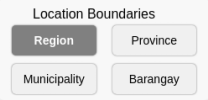
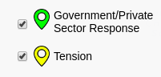
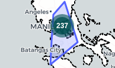
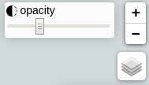

Welcome to the Critical Events and Monitoring System
Map of COVID-19 Related Incidents!
Map of COVID-19 Related Incidents!
In response to the COVID-19 situation, International Alert Philippines expanded its Critical Events Monitoring System (CEMS) to monitor tensions and violence related to the pandemic. The reports are visually presented through maps with the objective of not only information dissemination but also for data utilization in terms of programming among local governments to effectively respond to the tensions and pressures which may lead to violent conflict.
How to Use:

Click on the buttons on the
control panel to switch to different map
of overlays

Check the checkboxes to
display
the reported incidents related to
COVID-19

Click the circle icon on the
map to see
all reports within that area

Interact with the map by
zooming in or out, adjusting the overlay
opacity, and changing basemaps.
Click to close
CRITICAL EVENTS
MONITORING SYSTEM
MAP OF COVID-19 RELATED INCIDENTS
Boundaries
Administrative Boundaries of the Phillipines
Click on the buttons to see regional, provincial, municipal, or barangay borders.
Click on the buttons to see regional, provincial, municipal, or barangay borders.
Region
Province
Municipality
Barangay
CEMS
Incidents
These incidents were reported by ,asda
These incidents were reported by ,asda
Government/Private
Sector
Response
Tooltip text
Tension
Tooltip text
Violence
Tooltip text
Cluster Count
These numbered markers show how many individual
reports there are around the area.
DOH
COVID-19 Cases
Tooltip text3
asdasd
Tooltip text3
asdasd
Don't show
Show
You can see more of the overlay by adjusting moving the slider to the left (-) and see more of the base map underneath by moving the slider to the right(+).